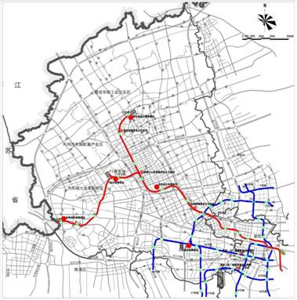

轨道交通11号线嘉定区站点综合开发交通影响分析 ( 2008年09月23日 )
轨道交通11号线嘉定区站点综合开发交通影响分析</STRONG>
研究时间：2007年6月15日—2007年9月30日</P>

图1 嘉定区轨道交通规划11号线站点及走向图
一、研究背景</P>
轨道交通11号线的建成将极大改变嘉定区目前依赖地面公路和市区联系的交通体系，同时也可以缓解地面道路的紧张状况。同时，轨道交通11号线的建设也为嘉定新城的构筑和发展创造了良好的契机。在站点周边综合开发用地，利用车站快捷的交通条件，为车站周边开发用地内人员出行活动提供快速集散服务。借鉴香港等地发展地铁的经验，借车站开发带动新城建设是嘉定区轨道11号线站点开发的基本思路。目前，嘉定区已经完成了在建车站的站点控制性详细规划，并且除了南翔站与昌吉路站外，其余各站点详细规划已通过行政审批。为了进一步明确在当前规划的开发模式和开发强度下，各站点的各类交通需求规模与规划配套交通设施是否匹配以及由此可能给相关区域造成的影响，嘉定区规划局、嘉定区轨道交通投资公司委托上海市综合交通规划研究所开展“轨道交通11号线嘉定区各站点交通影响分析”研究。</P>
二、研究内容</P>
1、嘉定区交通现状分析（略）
2、各类相关规划前提分析（略）
3、<A name=_Toc179686613>交通总体需求预测</A>（略）</P>
4、各站点综合分析
嘉定新城站</A>、<A name=_Toc179686632>马陆站</A>、<A name=_Toc179686639>白银路站、<A name=_Toc179686646>静宁路站、<A name=_Toc179686653>汽车城站、<A name=_Toc179686660>城北路站、<A name=_Toc179686667>昌吉路站、<A name=_Toc179686674>南翔站</A>（每个站点的分析按照站点概况、站点现状交通设施分析、规划交通设施及服务能力分析、站点交通需求分析、交通运行评价分析、措施及建议6个部分展开）</P>
（具体分析过程篇幅过长，在此省略）</P>
嘉定新城站：控制性详细规划修编后的公交首末站设施规模能够充分满足近远期公交发展需求；建议远期增加非机动车停放面积1000平方米左右。</P>
马陆站：在既定导向目标的进展下，马陆站点综合开发带来的交通增量对周边路网的服务水平影响有限。规划P+R的公共停车规模与需求基本平衡。</P>
白银路站：规划的公交首末站4000m2的用地规模可行，建议具体设计和建设中注重优化线路流向，提高土地利用效率，争取节约500-1000m2的面积，远期为非机动车停车泊位用地提供空间，可以与西侧的原规划非机动车停车场相结合，增加非机动车换乘停车350-700个泊位。</P>
静宁路站：控规规划的公交首末站停车位规模大于最低需求，规划用地4000平方米规模与交通局意见一致，该规模具备了50%的预留发展空间，根据实际情况发展，可以配置20个公交停车位；出租车停车规划泊位能够满足近期需求，远期需要增加4个以上的车位。</P>
汽车城站：曹安公路在汽车城站综合开发后，远期道路服务水平从D级降到E级，为减轻曹安公路压力，建议远期增加与曹安公路平行的东西向公路通道，可以将昌吉路东延伸衔接谢春路、绿环路，并穿越A5与宝园四路接通，从而构成一条嘉定区南部的东西向通道，分流部分曹安公路嘉定境内的交通流量；建议局部不平衡地区可采取地下停车库的方式，增加停车位；规划的非机动车停车规模偏小，将会影响正常的停车换乘客流。建议可与机动车停车场地通过资源共享解决，亦可根据停放需求的增加情况，逐步改造成立体停放。</P>
城北路站：远期环城路高峰时段饱和度较高，建议远期将环城北路由目前的双向4车道拓宽至双向6车道，可使环城路高峰时段的道路饱和度下降到0.8左右；控规中在站点内部设置12条公交始末线路是可行的，12000平方米的公交场站用地的用地指标完全可以满足远期枢纽的公交运营需要。</P>
昌吉路站：从道路流量预测结果看，在昌吉路站综合交通枢纽开发全部实施到位，嘉定新城按照远期总体规划目标实现开发的前提下，昌吉路站综合交通枢纽的车流量会有一定幅度的增加，但高峰时段道路饱和度基本上处于0.8以下，车流量与道路容量处于稳定的平衡状态，交通延误和拥堵不明显；控规中在站点内部设置2条公交始末线路，6个蓄车位是合理的，公交场站、线路的规划能够满足近、远期枢纽的公交运营需要。</P>
南翔站：周边路网的服务水平能够满足要求，但真南路高峰时段饱和度很高，主要是由车辆自然增长以及承担了大量的过境交通造成的，需要进行道路扩容或区域路网的梳理进行调整，建议在南翔基地区域内拓宽成双向8车道，其中2车道可设置公交专用道，为进出基地的公交提供方便；按照控规中的公共停车规模，无论是机动车泊位还是非机动车泊位，均与远期需求预测量接近，同时考虑真南路交通已经比较饱和，增加机动车停车泊位将加大道路设施与停车设施之间的不平衡，因此建议对公共停车规模加以控制，以引导周边交通的合理优化；在站点内部设置4条公交始末线路即能满足公交客流集散的需求，调整后控规规划的公交场站面积完全可以满足南翔站点近、远期的需要。</SPAN>